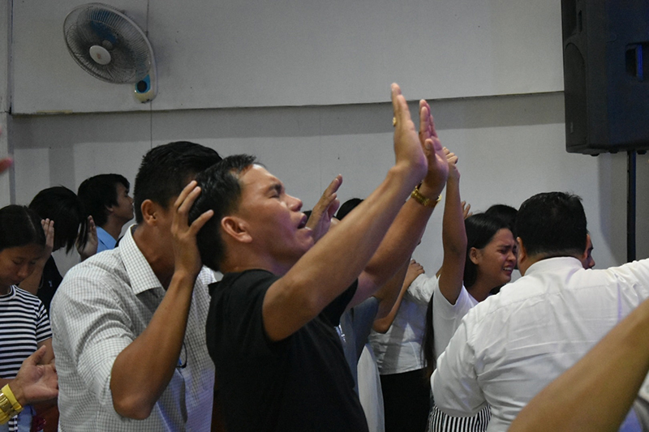
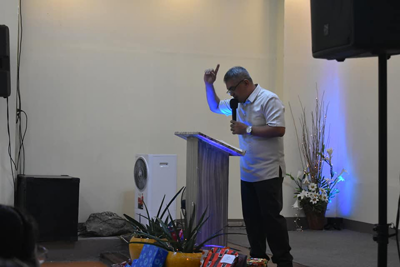
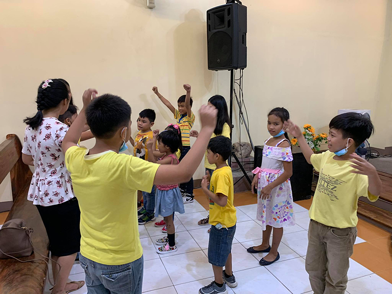

What is a normal Sunday morning like at Christian Tabernacle?
What should I expect if I visit?
Expect it to sound a little like a family reunion, with "loved ones"
of all ages in attendance. You should expect to be greeted and guided
inside the church. Worship services will last approximately 60
minutes. We'll be led in worship by a group of devoted musicians. You
should expect to hear a Bible message—truth God's about your life.
Also, be prepared to make some new friends!


What do people wear?
The people of Christian Tabernacle wear everything from t-shirts to
suit jackets to worship Jesus Christ. The focus is on Jesus, not on
your appearance or ability to fit in. You are welcome regardless of
your appearance.
Are kids welcome?
Children in the fifth grade and younger experience Jesus on their
level in Christian Tabernacle. SOC(Save our Child) is a fun,
age-appropriate atmosphere where children can participate in their own
service, which includes music, a Bible lesson, and small group time.
